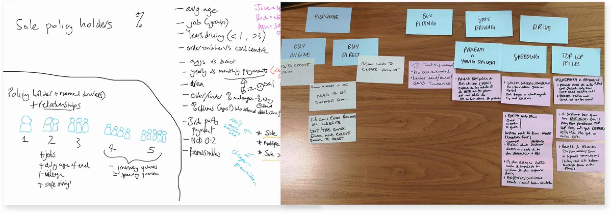
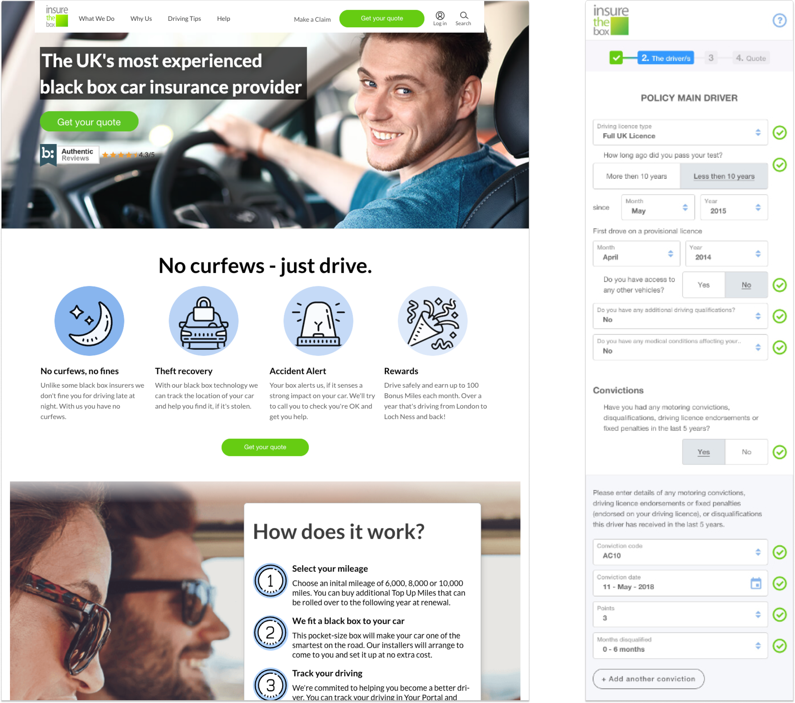

As-is customer lifecycle - highlighted key moments and headline discoveries
for how the service was performing.
Persona creation
From engaging with parts of the business it was evident that there was little understanding of who the customers are beyond key KPIs. Many had not spoken
directly to customers or engaged in customer research with the customer’s voice not widely represented in initiatives.

Service Advisor and business insights workshops - useful to initially refine assumptions into emerging
themes and then validated with a statistical representation.

Customer personas - identified 4 main customers across all telematic brands,
making up 95% of the customer base.
Outcome
Moved the customer perspective beyond just key KPI's such as No Claims Discount.
To include driver life-stage, needs relating to knowledge and experience in car insurance, attitudes towards contract responsibilities and ability to interact with organisations.
LIFECYCLE: ACQUISITION
Discoveries
Key findings identified:
- Brand and telematics proposition is poorly communicated
- Customers don’t feel comfortable purchasing from ITB because they don’t trust the website
- ITB have to compete based on reputation more than larger, recognised brands
- Most look on review sites because they didn’t recognise ITB
- Prospects via pricing aggregators encounter most challenges in their onward journey
- Broad variations in policyholders insurance knowledge (typically from years driving or situations encountered)
- New driver parents are heavily involved with policy management decisions
Optimisation Strategy
Optimisation strategy identified must-have hygiene features for an acquisition journey and a series of further experiment opportunities.

Optimisation strategy - identified baseline improvements & potential opportunities to explore.

Design wall - allowed easy mapping of findings, design evolutions & evaluative feedback.

Updated designs for quote & buy journey - working alongside Content Specialist and Visual Designer to overhaul the product landing page and enhancements to policy
quote and buy steps.
Improve telematics policy comprehension
Customer research identified that providers offered differing ‘flavours’ of telematics policy. This inconsistency was confusing for customers as it could incur penalties if usage rules were violated.
Creating a negative dynamic with customers who felt unfairly treated and a bad reputation for ITB with poor customer reviews.
To improve policy comprehension for prospects and policyholders, clarify how black box insurance works and ITB’s stance on policy usage such as curfews, limited mileage and rewards.
Improving trust of digital touchpoints
Customer research had identified that the digital touchpoints didn’t enact trust in prospects and customers. due to a series of factors (see survey). This also aligned with customer testing findings that identified challenges completing this journey on mobile - approx 60% of acquisition traffic at this time.
The assumption is that these factors contributed to the reduction of prospects successfully progressing through the acquisition journey.
To improve the trust of site visitors, a contemporary visual treatment was applied, utilising references to parent organisations ANDIE, Toyota and updating mobile design patterns with benchmarked best practice techniques to reduce the challenges faced in completing extensive data capture forms.
Outcome
Updating the landing
page and the 'must have' updates for quote & buy steps created
an uplift in policy conversions of 56% through online for its first 3 months of being live.
LIFECYCLE: POLICY USE
Discoveries
Identified key journey moments to focus on a new experience vision, main issues included:
- Disjointed experience with ITB partners especially box installation and finance provider creating a bad impression in the first days of the policy
- Customer data integrity issues that fundamentally affect communications and ongoing engagement with policyholders
- Low customer portal engagement and limited self-serve capabilities
- Misunderstanding of hidden fees causes customer stress and annoyance
- The claims process is difficult for a new driver to be effective
Service vision scenarios
Each key moment was framed for ideation by identifying a goal, discoveries and context from initial research and opportunities to improve the current as-is experience.
Design framing for accident claim key moment - aligning an overarching goal with relevant context discoveries (business, customer, technology) and
interpreted into a series of opportunities as 'How Might We' questions.
Scenario storyboard for accident claim key moment - selected ideas were formed into a scenario to communicate a vision for how the experience would occur.
Outcome
Scenarios formed key parts of the service vision for a customer portal and
policyholder engagement.
This also informed a further phase of customer research to gather perspectives on assumed attitudes and needs.